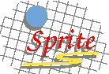

Sprite FTP files
Note: since the Sprite project is no longer active, this site is not
kept up-to-date. There are no guarantees on any of this.
- bench.tar.Z:
Sources for a collection of small benchmarks used in
the paper "Why Aren't Operating Systems Getting Faster
as Fast as Hardware".
- gdb.tar.Z:
gdb for Mach 3.0.
- gld.tar.Z:
Gnu linker with modifications for cross-linking between
different machine types.
- hash.tar.Z:
The Sprite hashing package. You'll also need the
list package.
- list.tar.Z:
The Sprite list package.
- mab.tar.Z:
Sources for Modified Andrew Benchmark (used in paper
"Why Aren't Operating Systems Getting Faster as Fast
as Hardware" and for other purposes).
- mipsim.tar.Z:
A simulator and assembly-language program debugger for
the MIPS R2000 architecture, written by John Ousterhout
for use in a freshman-level course in C and assembler.
- tcl:
A subdirectory full of various files containing sources and
documentation for Tcl and Tk and related packages. See the
README file in that directory for more information.
- xtsim.tar.Z:
library to interface event driven simulator to Xt toolkit.
- sprite-1.096.tar.Z:
Sprite kernel sources, version 1.096. Won't compile into
a kernel, but useful for browsing or borrowing code.
- sprited.tar.Z:
Sources for a Mach-based Sprite single-server. Mostly
of interest only to people doing work with Mach.
- cdrom.txt:
Information about Sprite sources and docs on CDROM.
Ken Shirriff
ken.shirriff@eng.sun.com